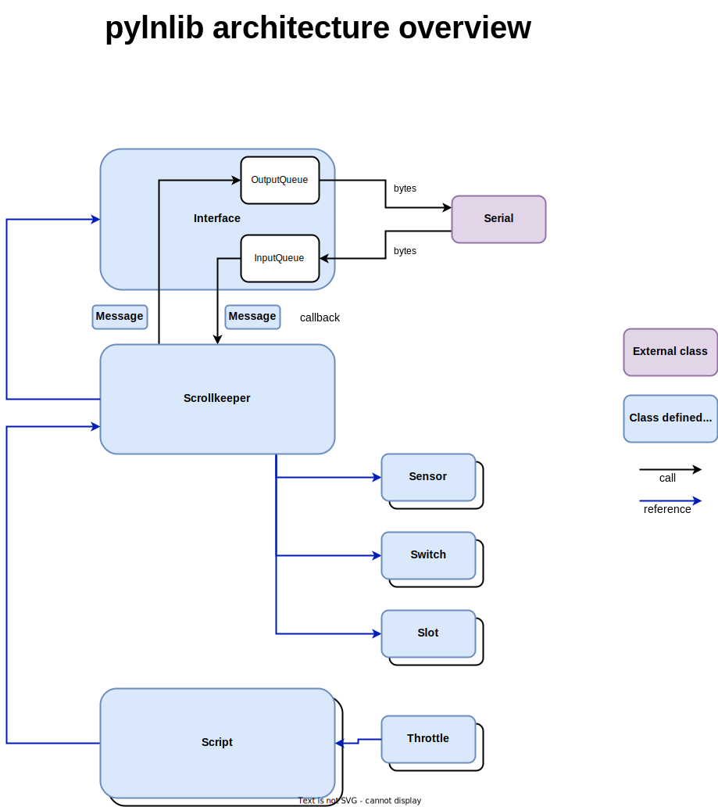

pylnlib
A python library to monitor LocoNet traffic on a usb/serial bus.
table of contents
- intro
- goals
- architecture
- Message and Interface classes
- The Scrollkeeper class
- The Script and Throttle classes
- The Sensor, Switch and Slot classes
- dependencies
- installation
- example programs
- capture and replay
- reference
intro
I am automating my layout with several Digikeijs components (DR5000, DR4024, DR4088CS) and I want to be able to script part of the running operation.
Now JMRI works fine and even allows for Python scripting, but I find it a bit top heavy on a RaspberryPi 3B+ and also, although this may be a matter of taste, the Python bindings are not very pythonic nor very logical IMHO.
Still, a lot of effort went into JMRI and otherwise it is a fine piece of software, but writing my own LocoNet Python library from scratch is not only a nice personal learning experience, but also might allow me to move some of it to microcontrollers with micro Python.
goals
The functional goals for pylnlib are
- be able to monitor all traffic on the usb loconet buffer interface of the DR5000
this includes some extensions like the extended function messages (opcodes a3 and d4) generated by many throttles.
to this end classes are provided that represent most messages as well as an UnknownMessage class for messages we do not recognize yet, or are not interested in (like those for CV programming for example)
- be able to control switches and locomotives
generate messages to change the state of a switch and to change the speed, diection and decoder function of a locomotive.
- provide a Script object that simplifies the automated operation of switches and locomotives.
non goals and scope
There are currently no plans to implement any CV programming options nor do we aim for completeness in controlling locomotives. For example, no functionality is provided to control 'consists'.
architecture
Pylnlib is designed around the Message and Interface classes.
Message and Interface classes
Message is subclassed for every implemented LocoNet message (a.k.a. opcode) and Interface communicates over a pyserial interface with the command station. Interface converts incoming raw bytes to (subclasses of) Message instances and converts outgoing Message instance to raw bytes.
Interface is thread safe and manages all input and output through two queues.
Other class instances, like the Scrollkeeper, can register a callback with an instance of an Interface that will be called for every incoming message.

The Scrollkeeper class
The Scrollkeeper class is designed to keep track of the layout status. It does this by registering a callback function with an instance of Interface and look at every incoming Message for changes in the status of sensors, switches and slots.
Status reply messages are used to update information about the item, just like commands. However if a command (like throwing a switch or changing the contents of a slot to change a locomotive's speed) references an unknown item, the Scrollkeeper instance will send an appropriate status request message. The reply to this message will then be processed as normal.
For any item it receieves information about (a sensor, switch, or slot) it creates or updates a suitable object in one of the collections it manages.
The Scrollkeeper class also offers methods to provide information about the status of the items it keeps updated and to forward an outgoing Message to an Interface.
The Scrollkeeper class is also thread safe, so a single instance could provide information to multiple instances od a Script. Thread safety is maintained by locks on the collections of slots, switches and sensors.
The Script and Throttle classes
The Script class is used to automate operations on a layout.
It holds a reference to a Scrollkeeper instance and provides methods to change locomotive speed, direction and functions, throw swithces as well as wait for a sensor to change to a certain state.
The Throttle class is a utility class that encapsulates control of a single locomotive
It is instantiated by calling a factory function in the Script class. Instantiation will also reserve a slot for the locomotive if this is not present yet and establish control by issueing a null move on that slot.
The Sensor, Switch and Slot classes
The Scrollkeeper class maintains several colections of objects that represent the state of an automated object.
The Sensor and Switch objects are fairly simple and represent on/off and thrown/closed states respectively.
The Slot object is a little more complicated as it carries much more information. It represents a slot on the active LocoNet 'stack'. In the LocoNet model you do not address locomotives directly but instead a collection of slots is kept that contains the current information about locomotives. The command station uses this information the repeatedly send DCC messages to the track.
One of the pieces of information in a slot is the decoder address of the locomotiv. Other information that is kept is the diection, speed and the state of the first 9 decoder functions. The Slot class extends this by also storing the state of decoder functions 10 and up.
dependencies
- Python 3.8
- pyserial
installation
pip install pylnlib
example programs
A simple monitor program can be run directly
python –m pylnlib
This program can also capture and store the network data to a file and replay this file. For more options type
python -m pylnlib --help
The scripts directory also contains sample programs that use the library and automate some activities.
capture and replay
The pylnlib library can also capture raw LocoNet bytes and store it for later replay in a file.
This can be really helpful when developing scripts. More details can be found here capture_and_replay.md